MadY
Scientific graphing. Go from a data table to a publication-ready figure, with every part editable. Free and open source.
Version 0.6.4 (beta) · Mac 0.6.3 · All versions · Portable .zip · GPL-3.0
Windows may warn you the first time. Click More info, then Run anyway.
See it work
Short videos from MadY's own manual. Turn the sound on for the narration.
The highlights: the chart gallery, clicking any part of a graph, style presets and publication figures.
What it does
Click it, change it
An axis, a bar, a label or a legend: click it and edit it. Double-click any text to retype it.
Suggested analyses
MadY suggests analyses based on how your data is structured.
Flexibility
Change the data and its graphs redraw at once. Analyses built on it are marked out of date. Every change can be undone.
Multi-panel figures
Panel letters, alignment by axes, shared axes and one merged legend, on a layout you pick.
One coherent look
Six built-in style presets, plus house styles you save and share, so a paper looks like one piece.
Brings your data in
CSV and text files, JSON, Excel and older workbooks, and the data tables of .pzfx files.
Export options
PNG, JPEG, TIFF (CMYK), SVG, PDF and interactive HTML, at journal print widths.
Your figures are yours
No watermark, no attribution requirement, no conditions. Publish them as you wish.
On your own computer
Works offline on Windows 10 and 11, with an experimental build for Macs with an Apple chip. No account, no telemetry, no cloud: your data stay with you.
Open source
Read the code, report a problem or ask for a feature on GitHub. Free to use, study, change and share under the GNU GPL.
Over 50 graph types
Twelve of them, each drawn by MadY.
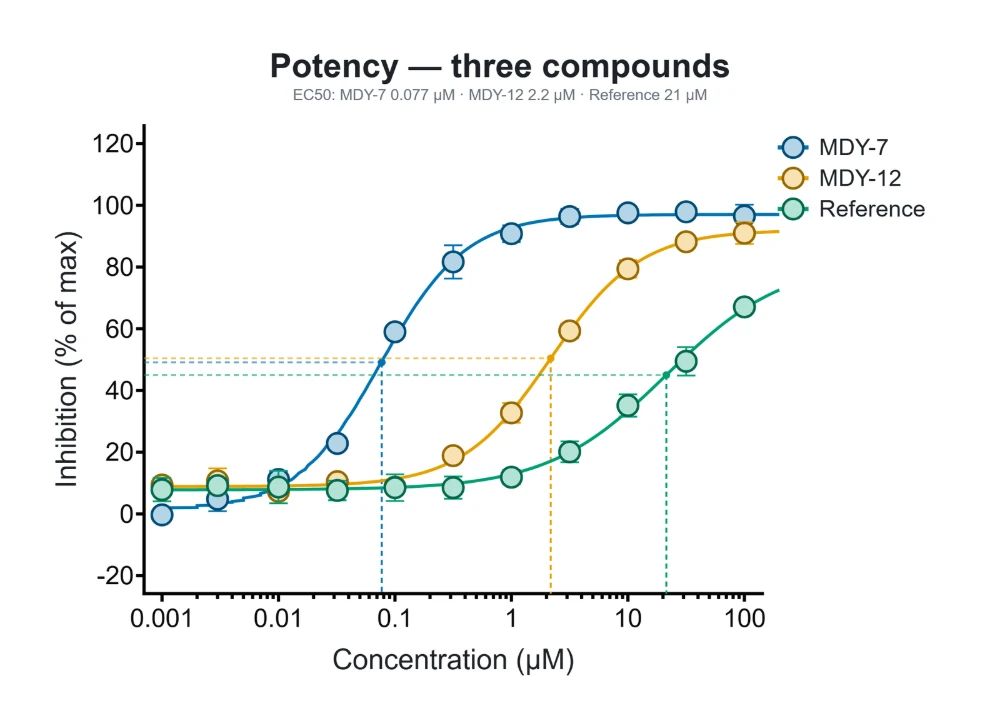
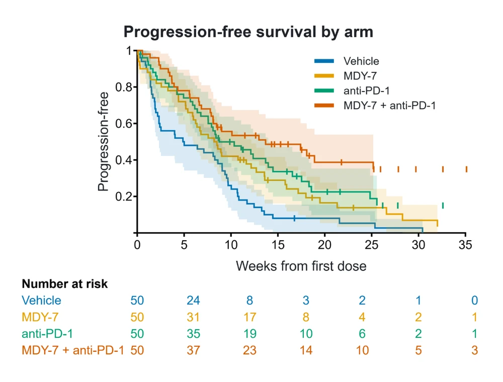
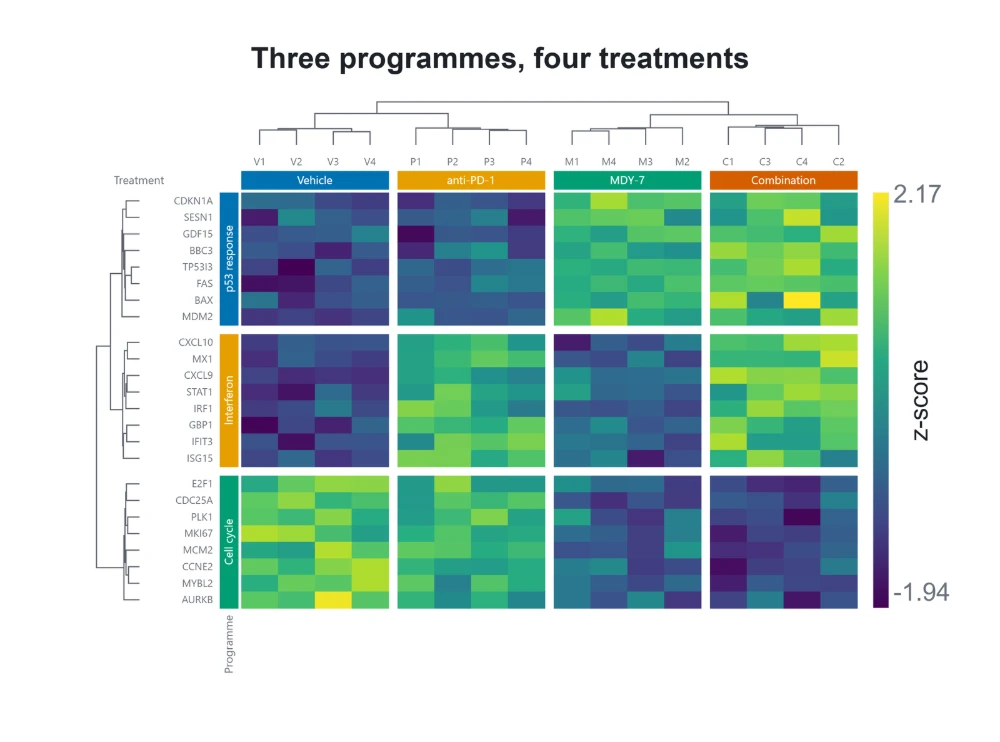
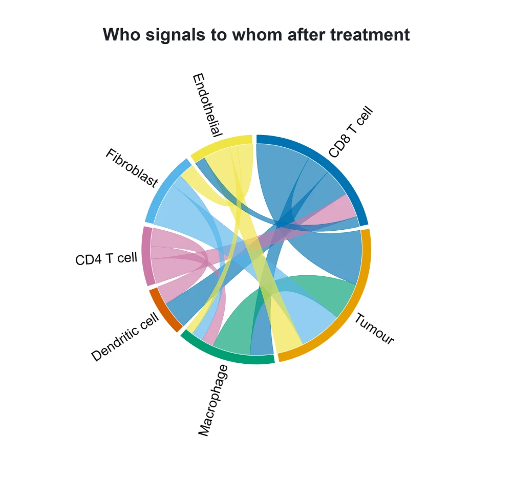
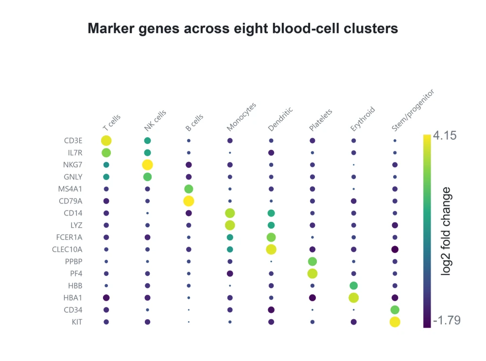
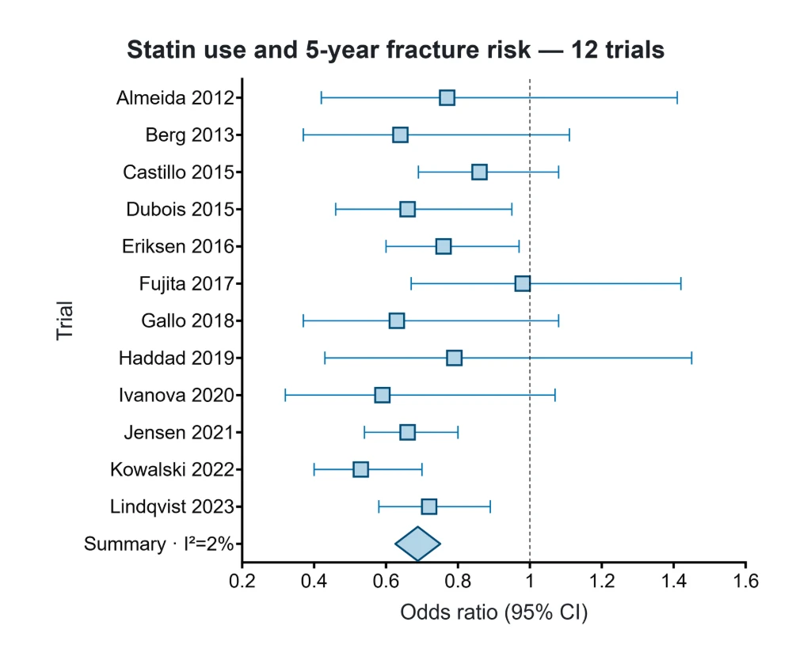
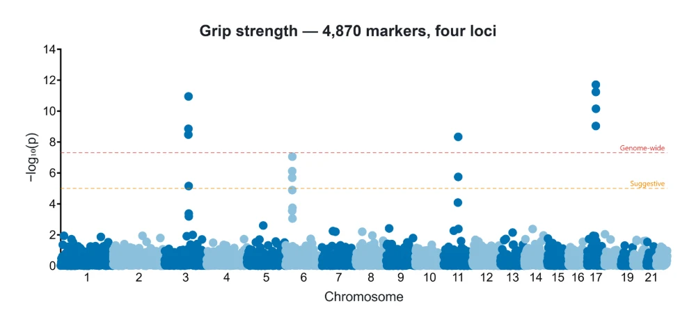
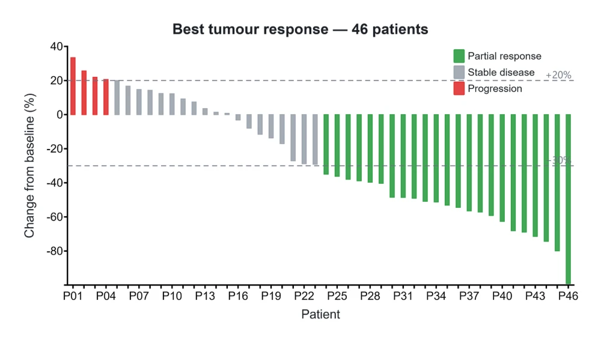
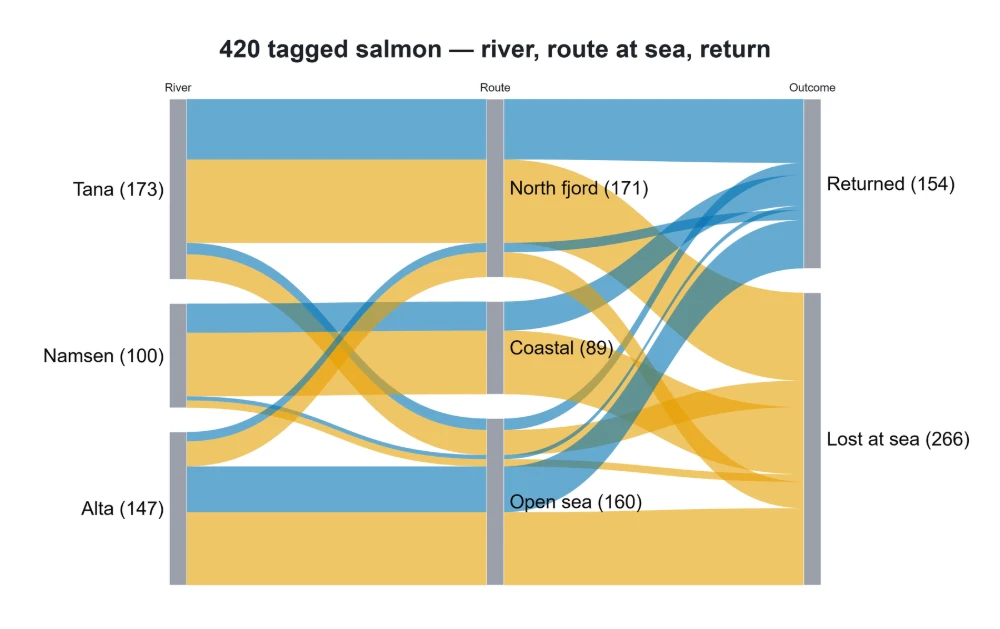
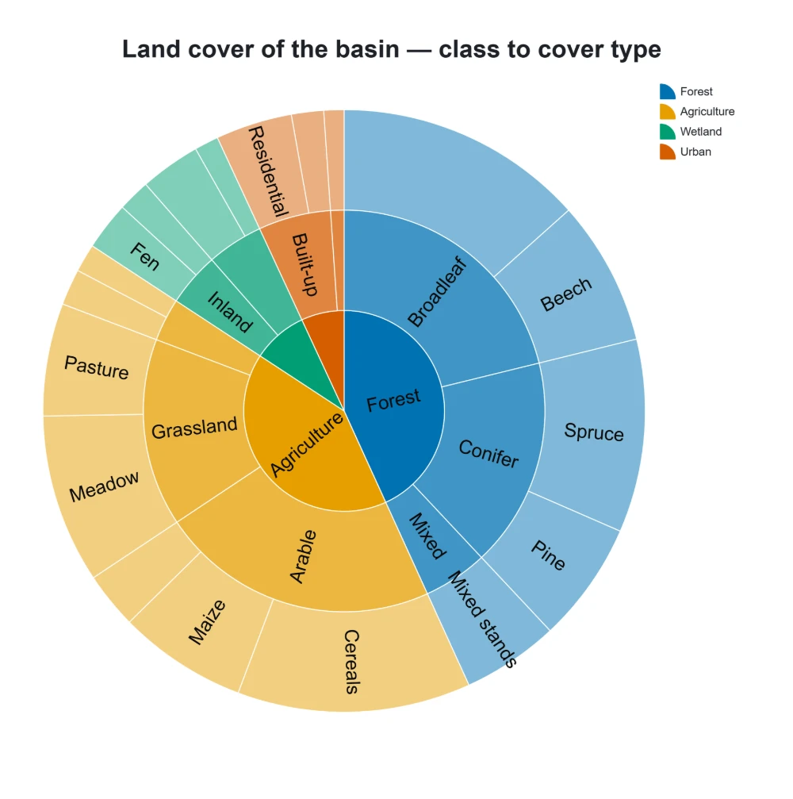
All examples use made-up data.
Statistics you can check
SciPy and statsmodels do the calculations. Over 1,300 independent checks recompute the statistics by different means and run with the test suite.
Every result states its assumptions and says in one sentence what it found.
MadY is in beta. Check any statistics you publish against an established statistics package.
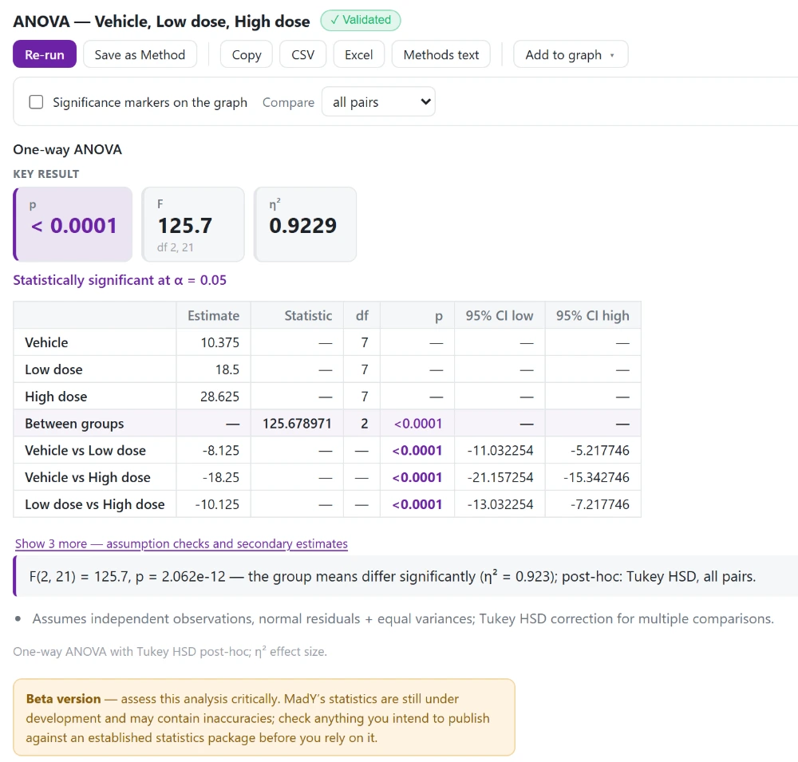
Get MadY
Windows may warn you the first time. Click More info, then Run anyway.
Mac: experimental, version 0.6.3, for Apple chips and macOS 12 or later. The first time, open System Settings ▸ Privacy & Security and click Open Anyway.